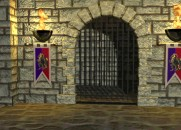
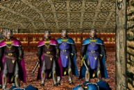
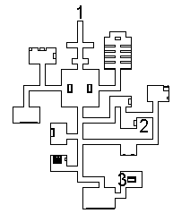

| Silverhelm Stronghold | |
| 1. | Entrance |
| 2. | Lord Silverhelms Ghost |
| 3. | This is where you will find an Ankh. Take it to Loretta Fliese, and she will tell you to collect your reward from Lord Stone in White Cap. |
Leave us a messagemgrounds@hotmail.com